Meine Projekte
Übersicht über praktische Arbeiten aus den Bereichen Medientechnik, Produktfotografie und Bildbearbeitung.
Fotografie & Photoshop Portfolio
Eine Auswahl meiner Bearbeitungen und Fotografien (port1.png bis port19.png):
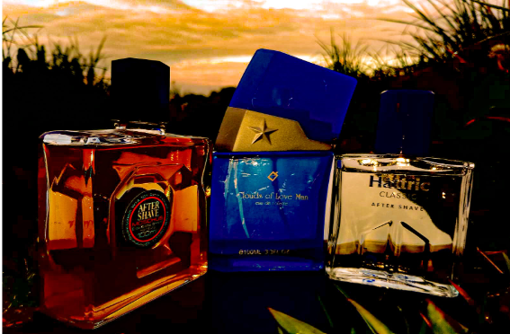
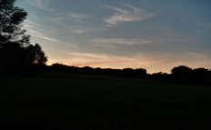
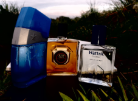
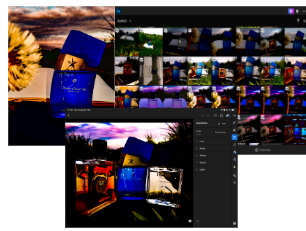
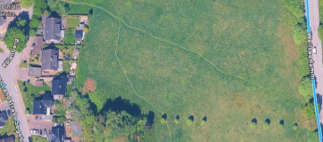
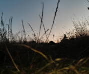
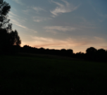
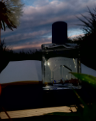
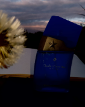
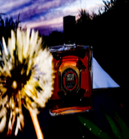
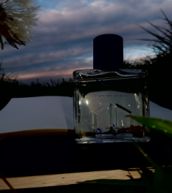
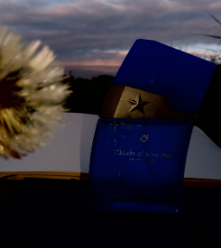
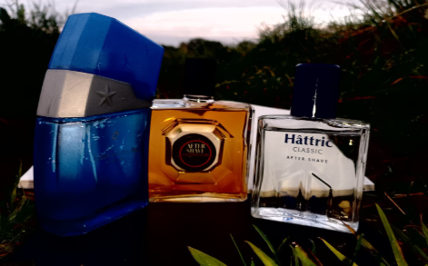
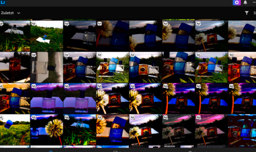
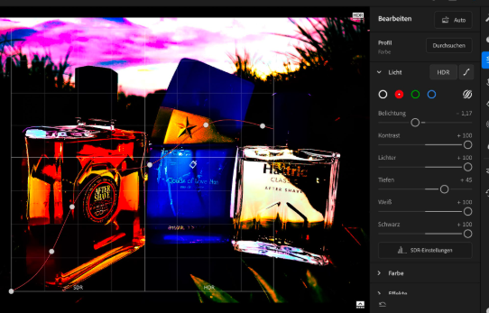
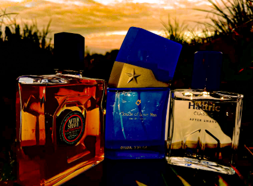
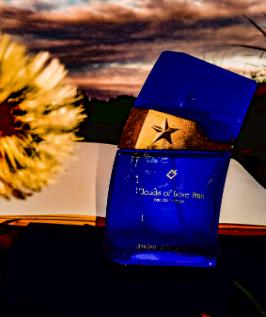
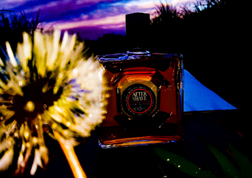
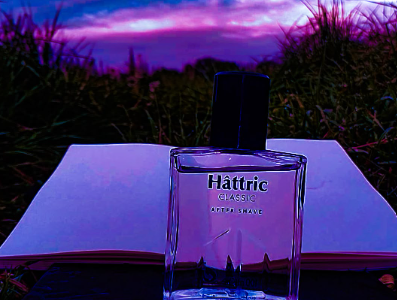
Musikproduktion mit Ableton 12
Ein Einblick in meine Arbeit als Musikproduzent. Hier dokumentiere ich meinen Prozess bei der Erstellung eines Remixes, von der Soundauswahl bis zum fertigen Arrangement.
Projekt: Remix von „Raise“ (Original von Chilli Beans.)
Software: Ableton Live 12
Schwerpunkt: Eigener Style, neue Beats, Layering und Dynamik
1. Einleitung & Deckblatt
Das Deckblatt meines Projekts wurde mit einem KI-Bildgenerator (Gemini) im „Nano Banana“-Modus erstellt. Der Master-Prompt lautete:
"Digital illustration in a vibrant Shonen anime style, depicting a classic wooden sailing ship with large white sails navigating a vast, sparkling blue ocean. The scene is set during a warm sunset with a golden sun low on the horizon, casting reflections on the water. In the background, there are stylized tropical islands with steep cliffs. The sky is filled with dramatic, fluffy white and orange clouds. The overall mood is adventurous, bright, and optimistic. High quality, cinematic composition, no people."
Die Nutzung des Bildes erfolgt gemäß den Richtlinien zur unzulässigen Nutzung von generativer KI (Stand: 17. Dezember 2024).
2. Ressourcen & Sound-Auswahl
Für dieses Projekt habe ich verschiedene kostenlose Soundpacks von Ableton verwendet:
- Vibrations (ModeAudio): Eine spielerische Auswahl an Loops und Samples – von nostalgischen Synths bis zu crispigen Gitarren-Licks. (498.6 MB)
- Break Selection (Sample Magic): Ein Pack mit 175 Drum-Loops, aufgenommen von Weltklasse-Drummern.
- Singularities (Ableton): Lässt den Sound und das Feeling klassischer Synths und Sampler wieder lebendig werden. Mit 40 Instrument-Racks, MIDI-Clips und Drum-Kits.
- Recording Hybrid Kit (Drumdrops): Ein kostenloses Multisamples-Pack eines Yamaha-Schlagzeugs mit Sounds in verschiedenen Anschlagstärken.
Die Packs können auf der Ableton-Website heruntergeladen werden.
3. Das Projekt: Remix von „Raise“
Meine Entscheidung war, den Song „Raise“ von Chilli Beans. als Basis zu nehmen und ihn komplett neu zusammenzubauen. Dabei verändere ich den Style und den Beat nach meinen eigenen Vorstellungen. In der Hauptansicht sieht man, wie ich eigene Sounds wie den Synthetic Choir oder die Cruiser Strings darüberlege. Damit drücke ich dem Ganzen meinen eigenen Stempel auf und mache eine völlig neue Version daraus.
4. Lied-Struktur & technische Umsetzung
Hier sind einige Einblicke in meine Ableton-Projekte:


5. Analyse & Merkmale
Die wesentlichen Merkmale meiner Musikproduktion sind:
- Layering: Ich staple die gleiche Melodie mit vielen verschiedenen Instrumenten übereinander für einen fetten Sound.
- Dynamik: Ich nutze Automationen für Bass und Lautstärke, damit die Instrumente im Ohr lebendig bleiben.
- Ordnung: Ich benenne alle Spuren genau und nutze die automatischen Farben, um in der Hauptansicht den Durchblick zu behalten.
- Struktur: Der Song startet einfach, wird immer voller und endet ganz reduziert in einem Solo-Duett.
- Harmonie: Ich arbeite fest in C-Dur, damit alles harmonisch perfekt zum Original passt.
6. Wissen kompakt: Cover, Sample & Remix
- Cover: Ich nehme die Melodie und die Noten und spiele sie mit meinen eigenen Instrumenten nach. Für eine Veröffentlichung brauche ich eine Erlaubnis, da die Melodie dem Original-Künstler gehört.
- Sample: Ich nehme ein direktes Stück aus einer echten Aufnahme vom Original. Das ist rechtlich strenger und ich muss fast immer vorher fragen und bezahlen.
- Remix: Ich bekomme die Einzelspuren vom Original und baue den Track komplett um. Das darf man offiziell nur, wenn der Künstler oder das Label mir das Material dafür extra gibt.
7. Was sind MIDI Files?
MIDI Files sind wie digitale Notenblätter. Sie machen selbst keinen Sound, sondern speichern nur die Infos, welche Note wie lange und wie fest gedrückt wird. Das Coole daran ist die Freiheit: Ich nehme die gleichen Noten und tausche einfach das Instrument aus. Einmal klingen die Noten nach Streichern und einmal nach dem Piano. In meinem Projekt sind die bunten Blöcke meine MIDI-Clips, die meinen Instrumenten genau sagen, was sie spielen sollen.
Quellenverzeichnis
- Bilderstellung & Prompt: Gemini AI
- Ableton Packs: https://www.ableton.com/de/packs/
- Missing Piece (Vance Joy) Noten: MuseScore
- Missing Piece (John Michael Howell) Video: YouTube
- Raise (Chilli Beans.) Video: YouTube